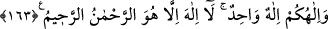

Hikâye edildiğine göre Havvâ vâlidemiz, yasak ağaçtan ilk olarak yalnız başına
yiyince herhangi bir şey olmadı. Fakat Âdem (a.s.)’in ondan yemesi üzerine ikisi
birlikte cennetten çıkarıldılar. Nefislerine ve başkalarına zulmeden riyâset ehline ve baş
olma sevdalılarına yazıklar olsun! Çünkü onlar, Allah’dan ve O’nun rahmetinden uzak
kalacak ve cehennem ateşine atılacaklardır. Allah’ım, sen bizleri böyle bir durumdan
koru; âmin!
163. İlâhınız bir tek Allah’tır. O’ndan başka ilâh yoktur. O, rahmândır, rahîmdir.
Ey İnsanlar! Sizin ibâdet etmenize lâyık ve hak sahibi olan ilâhınız Allah, ilâhlıkta
tektir. Bu hususta O’nun hiçbir ortağı yoktur. O’ndan başkasının ilâh olarak
isimlendirilmesi doğru değildir. Çünkü O’ndan başka mâbûd yoktur.
“O’ndan başka ilâh yoktur.” ifâdesi, Allah’ın ilâhlıkta tek olduğunu pekiştirmekte,
ibâdet edilmeye lâyık olmasa da başka birtakım ilâhların olabileceği şüphesini
zihinlerden uzaklaştırmakta ve şu mânâyı anlatmaktadır: “İşte siz Allah’ı böyle
tanıyınız. Devamlı olarak O’na ibâdet ediniz. O’ndan başkasından ne korkunuz, ne de
istekte bulununuz ve O’ndan başkasına asla kulluk etmeyiniz.”
İsimler iki kısımdır. Zâhir isimler, zamîr isimler. ( ) kelimesi de bir zamîr isimdir.
Yalnız zamîr olması, onun isim olmasını engellemez. İmam Fahreddin Râzî, et-
Tefsîru’l-Kebîr’de bu kelimenin ismiyeti hakkında açıklama yapmıştır. Geniş bilgi için
oraya bakılabilir.
Hakikat ehline göre ( ) “Hû” kelimesi hâlis isimdir. Çünkü Allah’ın tek olan zâtına
delâlet eden, zâhir veya zamîr her kelime onlara göre hakîkî isimdir. Bundan dolayı bu
ismin başına harf-i târif getirilerek “âlemü’l-hüviyye” denilmiştir.
Mesnevî’de gelmiştir ki:
İsm-i “Hû” olmadan nefsin hevâsından kim kurtulabilir?
Ey O’nun adıyla “Hû” ismiyle kânî ve mutmain olan!
Sen, hakikati olmayan hiçbir ad gördün mü?
“Gül”; “gâf” ve “lâm” harflerini söylemekle gül olur mu?
Sen “Hû” ismini söylerken yürü git de müsemmâyı ara!
O müsemmâ ne yukarıdadır, ne de aşağıda su içindedir.
Eğer harf ve isimden geçip âlem-i ulûhiyete ermek dilersen,
Nefsini görmekten, benlik duygusundan temizlemelisin.
Demir gibi demirliğini ateşle renksiz eyle, demirlikten çık ateş ol.
Riyâzet sâyesinde kalb aynasını paslardan temizlemeye bak!
Benliğini benlik vasıflarından saf ve temiz hale getir ki